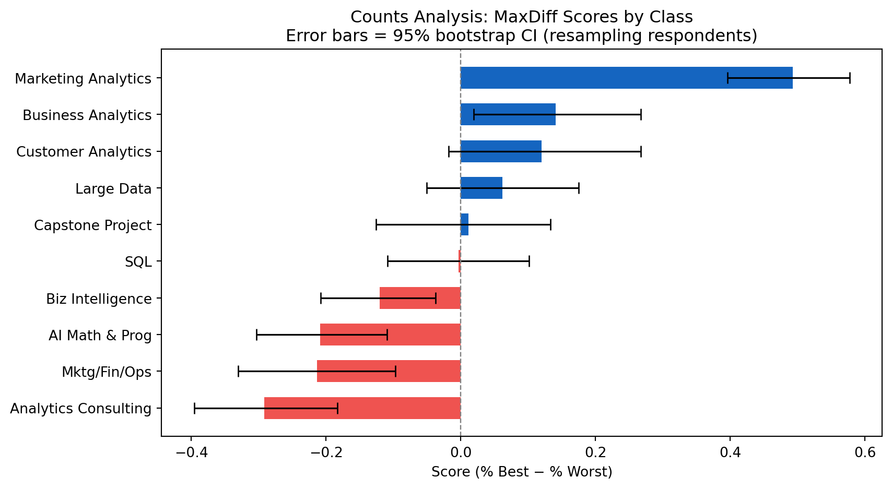
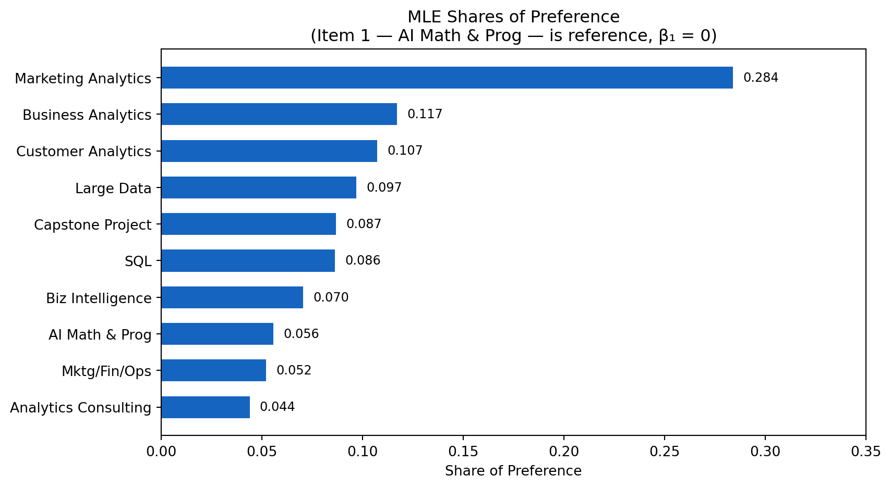
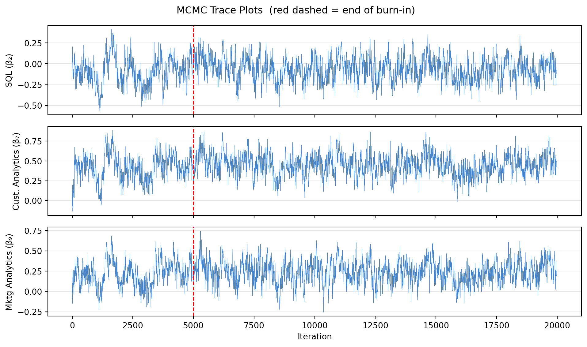
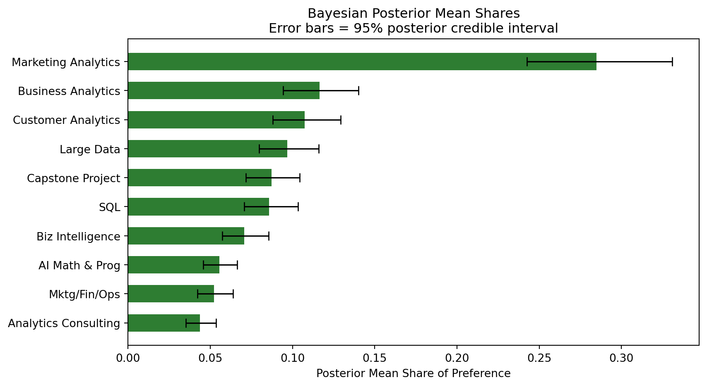
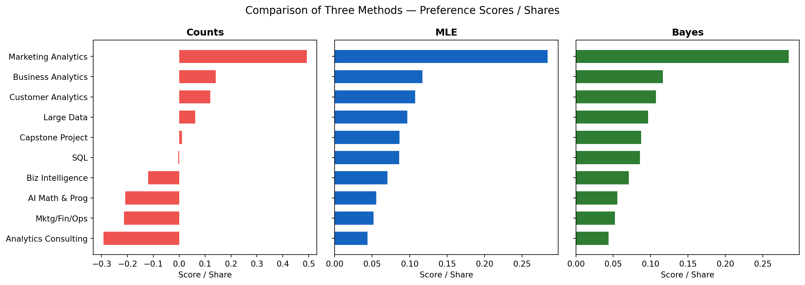

import pandas as pd
# Read datasets
df = pd.read_csv("maxdiff_design_and_choices.csv")
labels = pd.read_csv("maxdiff_item_labels.csv")MaxDiff Analysis of MSBA Class Preferences
Counts, MLE, and Bayesian estimation of the MNL model
Introduction
Introduction
MaxDiff (also known as Best-Worst Scaling) is a survey methodology designed to measure people’s preferences across a set of items with high reliability and granularity. In each screen of a MaxDiff survey, respondents see a small subset of items — here, four at a time — and are asked to identify which item they find most preferred and which they find least preferred. This process is repeated over many screens, so that each item is seen multiple times and the full preference structure can be recovered.
Why MaxDiff rather than a 1–10 rating scale? The fundamental reason is that humans are far better at making relative comparisons — choosing a best and a worst from a small set — than they are at calibrating absolute numeric ratings. Rating scales suffer from scale-use bias: some respondents use only the top of the scale, others cluster toward the middle. MaxDiff forces genuine differentiation by requiring real trade-offs, making it particularly well-suited for measuring stated preferences in research contexts.
In this research, the 10 items are the 10 core MSBA classes at UCSD Rady School of Management. The goal is to estimate students’ relative preferences for each class using three methods of increasing sophistication:
- counts analysis — measuring how frequently each class was selected as the most preferred versus the least preferred, creating a simple preference score without relying on complex modeling assumptions.
- multinomial logit (MNL) model fit by maximum likelihood (MLE) — which explicitly models the choice process and recovers utility coefficients and standard errors.
- The same MNL model fit by Bayesian methods via a Metropolis-Hastings MCMC sampler — which estimates a distribution of possible parameter values and allows uncertainty in the results to be measured through credible intervals.
All three methods should broadly agree on which classes sit at the top and bottom of the preference ranking. Differences will emerge in how they quantify the strength of preference, how they communicate uncertainty, and in how they handle the middle of the distribution where items are more competitive.
The Data
The analysis uses two datasets: maxdiff_design_and_choices.csv and maxdiff_item_labels.csv. The first file contains the MaxDiff survey design together with respondents’ choices, while the second file maps the numeric item identifiers to the names of the MSBA courses.
Each row in the dataset represents one item shown within a specific survey task. The variable Record ID identifies the respondent, Task indicates the survey screen, Position records the location of the item on the screen, Item identifies the course shown, and Response records the choice outcome. A value of 1 means the item was selected as “best,” -1 means it was selected as “worst,” and 0 means the item was shown but not selected.
Basic Descriptive Statistics
We first summarize the structure of the MaxDiff experiment, including the number of respondents, the number of tasks completed per respondent, the number of items shown in each task, and the total number of courses included in the study.
# Number of respondents
N = df4["Record ID"].nunique()
# Tasks per respondent
T_mean = df4.groupby("Record ID")["Task"].nunique().mean()
# Items per task
J_task = 4
# Total number of items
J_tot = df4["Item"].nunique()
print(f"Respondents (N) : {N}")
print(f"Tasks per respondent : {int(T_mean)}")
print(f"Items per task (J) : {J_task}")
print(f"Total items in study : {J_tot}")Respondents (N) : 85
Tasks per respondent : 8
Items per task (J) : 4
Total items in study : 10# python item table
display(
labels_df[["item","label"]]
.rename(columns={"item": "Item #", "label": "Class Name"})
.style.hide(axis="index")
.set_caption("Item–label mapping")
)| Item # | Class Name |
|---|---|
| 1 | MGTA 403 AI Math, Prog., & Analytics (Summer with Nijs) |
| 2 | MGTA 464 SQL (Summer with Nijs) |
| 3 | MGTA 451 Marketing/Finance/Operations (Summer with Wilbur/Buti/Shin) |
| 4 | MGTA 452 Large Data (Fall with Hansen) |
| 5 | MGTA 453 Business Analytics (Fall with August) |
| 6 | MGTA 444 Analytics Consulting (Winter with Peterson) |
| 7 | MGTA 455 Customer Analytics (Winter with Nijs) |
| 8 | MGTA 454 Capstone Project (Spring with Advisor) |
| 9 | MGTA 495 Marketing Analytics (Spring with Yavorsky) |
| 10 | MGTA 457 Biz. Intelligence Systems (Fall with Schibler) |
The results confirm that each respondent completed the same number of tasks and that each task displayed four items, consistent with the intended MaxDiff survey design.
Sanity Check of Response Structure
To verify the integrity of the dataset, we check whether every task contains exactly one “best” choice, one “worst” choice, and two unselected items.
# sanity-check
check = (
df4.groupby(["Record ID", "Task"])["Response"]
.agg(n_best=lambda x: (x == 1).sum(),
n_worst=lambda x: (x == -1).sum(),
n_zero=lambda x: (x == 0).sum())
.reset_index()
)
print("All tasks have exactly 1 best pick :", (check["n_best"] == 1).all())
print("All tasks have exactly 1 worst pick:", (check["n_worst"] == 1).all())
print("All tasks have exactly 2 neutral :", (check["n_zero"] == 2).all())All tasks have exactly 1 best pick : True
All tasks have exactly 1 worst pick: True
All tasks have exactly 2 neutral : TrueThis sanity check confirms that the response structure is valid and that the data are correctly formatted for subsequent analysis.
Item Exposure Counts
Finally, we examine how often each course appeared throughout the survey. Since MaxDiff designs are typically balanced, each item should be shown approximately the same number of times.
# item-exposure count
exposure_tbl = (
df4.groupby("Item").size()
.reset_index(name="Times Shown")
.assign(Class=lambda d: d["Item"].map(abbrev_map))
[["Item","Class","Times Shown"]]
)
display(exposure_tbl.style.hide(axis="index").set_caption("Exposure counts per item"))
print(f"\nRange: {exposure_tbl['Times Shown'].min()}–{exposure_tbl['Times Shown'].max()} (balanced design)")| Item | Class | Times Shown |
|---|---|---|
| 1 | AI Math & Prog | 273 |
| 2 | SQL | 274 |
| 3 | Mktg/Fin/Ops | 272 |
| 4 | Large Data | 276 |
| 5 | Business Analytics | 270 |
| 6 | Analytics Consulting | 267 |
| 7 | Customer Analytics | 276 |
| 8 | Capstone Project | 272 |
| 9 | Marketing Analytics | 274 |
| 10 | Biz Intelligence | 266 |
Range: 266–276 (balanced design)The exposure counts show that the survey design is well balanced, with each course appearing a similar number of times across respondents and tasks.
Counts Analysis
\[ \text{score}_j \;=\; \%\text{best}_j \;-\; \%\text{worst}_j \]
where \(\%\text{best}_j\) is the fraction of times item \(j\) was chosen as best among all tasks in which it appeared, and similarly for worst. A score near \(+1\) means the item is almost always chosen as best; near \(-1\) means it is almost always chosen as worst; near \(0\) means the item is polarizing or middle-of-the-pack when shown.
This method is simple and requires no statistical modeling assumptions, making it easy to compute and explain. However, it treats each choice independently and does not account for the specific set of courses that appeared together in each task.
# counts score table
exposure = df4.groupby("Item").size().rename("shown")
best_cnt = df4[df4["Response"] == 1].groupby("Item").size().rename("n_best")
worst_cnt = df4[df4["Response"] == -1].groupby("Item").size().rename("n_worst")
counts_df = (
pd.concat([exposure, best_cnt, worst_cnt], axis=1)
.fillna(0).astype(int)
.reset_index()
)
counts_df["Class"] = counts_df["Item"].map(abbrev_map)
counts_df["pct_best"] = counts_df["n_best"] / counts_df["shown"]
counts_df["pct_worst"] = counts_df["n_worst"] / counts_df["shown"]
counts_df["score"] = counts_df["pct_best"] - counts_df["pct_worst"]
counts_df = counts_df.sort_values("score", ascending=False).reset_index(drop=True)
counts_df["rank"] = range(1, 11)
display(
counts_df[["Item","Class","shown","n_best","n_worst","pct_best","pct_worst","score","rank"]]
.rename(columns={"shown":"Shown","n_best":"Best","n_worst":"Worst",
"pct_best":"% Best","pct_worst":"% Worst","score":"Score","rank":"Rank"})
.round(3)
.style.hide(axis="index")
.set_caption("Counts Analysis — ranked by score")
)| Item | Class | Shown | Best | Worst | % Best | % Worst | Score | Rank |
|---|---|---|---|---|---|---|---|---|
| 9 | Marketing Analytics | 274 | 147 | 12 | 0.536000 | 0.044000 | 0.493000 | 1 |
| 5 | Business Analytics | 270 | 93 | 55 | 0.344000 | 0.204000 | 0.141000 | 2 |
| 7 | Customer Analytics | 276 | 104 | 71 | 0.377000 | 0.257000 | 0.120000 | 3 |
| 4 | Large Data | 276 | 77 | 60 | 0.279000 | 0.217000 | 0.062000 | 4 |
| 8 | Capstone Project | 272 | 72 | 69 | 0.265000 | 0.254000 | 0.011000 | 5 |
| 2 | SQL | 274 | 55 | 56 | 0.201000 | 0.204000 | -0.004000 | 6 |
| 10 | Biz Intelligence | 266 | 23 | 55 | 0.086000 | 0.207000 | -0.120000 | 7 |
| 1 | AI Math & Prog | 273 | 33 | 90 | 0.121000 | 0.330000 | -0.209000 | 8 |
| 3 | Mktg/Fin/Ops | 272 | 43 | 101 | 0.158000 | 0.371000 | -0.213000 | 9 |
| 6 | Analytics Consulting | 267 | 33 | 111 | 0.124000 | 0.416000 | -0.292000 | 10 |
Bootstrap Confidence Intervals
We resample respondents (with replacement) 1,000 times and recompute each item’s score to obtain 95% bootstrap confidence intervals.
plot_df = counts_df.sort_values("score")
colors = ["#EF5350" if s < 0 else "#1565C0" for s in plot_df["score"]]
fig, ax = plt.subplots(figsize=(9, 5))
bars = ax.barh(plot_df["Class"], plot_df["score"], color=colors, height=0.6)
ax.errorbar(
plot_df["score"], plot_df["Class"],
xerr=[plot_df["score"] - plot_df["ci_lo"], plot_df["ci_hi"] - plot_df["score"]],
fmt="none", color="black", capsize=4, linewidth=1.2
)
ax.axvline(0, color="grey", linestyle="--", linewidth=0.9)
ax.set_xlabel("Score (% Best − % Worst)")
ax.set_title("Counts Analysis: MaxDiff Scores by Class\n"
"Error bars = 95% bootstrap CI (resampling respondents)")
plt.tight_layout()
plt.show()
Observations
Marketing Analytics clearly stood out as the most preferred specialization, receiving the highest MaxDiff score by a large margin (~0.49). This suggests respondents consistently viewed it as the most attractive option.
In contrast, Analytics Consulting, Marketing/Finance/Ops, and AI Math & Programming received negative scores, implying these tracks were more frequently selected as least preferred options.
Finally, several categories showed relatively wide bootstrap confidence intervals, suggesting variability and uncertainty in respondent preferences. SQL remained essentially neutral, with scores centered near zero.
From MaxDiff Data to MNL Choices
Before fitting a statistical model, we translate the MaxDiff data into a form compatible with the multinomial logit (MNL) framework.
The MNL model assigns each item \(j\) a utility coefficient \(\beta_j\). On a task showing items \(\{a, b, c, d\}\), the probability that item \(b\) is picked best follows the soft-max:
\[ P(\text{best} = b) \;=\; \frac{\exp(\beta_b)}{\exp(\beta_a) + \exp(\beta_b) + \exp(\beta_c) + \exp(\beta_d)} \]
After the best pick, the respondent picks the worst from the remaining three items — equivalent to picking the best with negated utilities:
\[ P(\text{worst} = c \mid \text{best} = b) \;=\; \frac{\exp(-\beta_c)}{\exp(-\beta_a) + \exp(-\beta_c) + \exp(-\beta_d)} \]
This gives two MNL observations per task: the best-pick from the full 4-item set, and the worst-pick from the remaining 3-item set.
Identifiability. The softmax is invariant to adding a constant to all \(\beta_j\), so only differences are identified. We fix \(\beta_1 = 0\) (AI Math & Prog as reference) and estimate \(\beta_2, \ldots, \beta_{10}\).
task_records = []
for (rid, task_num), grp in df4.groupby(["Record ID", "Task"]):
items_shown = grp["Item"].tolist()
best_item = grp.loc[grp["Response"] == 1, "Item"].values[0]
worst_item = grp.loc[grp["Response"] == -1, "Item"].values[0]
task_records.append((items_shown, int(best_item), int(worst_item)))
print(f"Total tasks (MNL observations × 2) : {len(task_records)} × 2 = {len(task_records)*2}")
print(f"Example task: items={task_records[0][0]}, best={task_records[0][1]}, worst={task_records[0][2]}")Total tasks (MNL observations × 2) : 680 × 2 = 1360
Example task: items=[5, 7, 4, 1], best=7, worst=1MNL via Maximum Likelihood
Log-Likelihood
Summing over all \(N \cdot T\) tasks:
\[ \ell(\mathbf{\beta}) = \sum_{\text{tasks}} \Big[\, \beta_{j^*_b} - \log\!\!\sum_{j \in \text{shown}}\!\!\exp(\beta_j) \;-\; \beta_{j^*_w} - \log\!\!\!\!\sum_{j \in \text{shown}\setminus\{j^*_b\}}\!\!\!\!\exp(-\beta_j)\,\Big] \]
where \(j^*_b\) is the item picked best in that task and \(j^*_w\) is the item picked worst.
def log_likelihood(beta9, tasks=task_records):
"""Log-likelihood. beta9: length-9 vector for items 2-10; item 1 fixed at 0."""
beta = np.concatenate([[0.0], beta9]) # full length-10
ll = 0.0
for items_shown, best, worst in tasks:
b_utils = np.array([beta[i - 1] for i in items_shown])
# log-sum-exp for numerical stability
b_lse = np.max(b_utils) + np.log(np.sum(np.exp(b_utils - np.max(b_utils))))
ll += beta[best - 1] - b_lse
remaining = [i for i in items_shown if i != best]
w_utils = np.array([-beta[i - 1] for i in remaining])
w_lse = np.max(w_utils) + np.log(np.sum(np.exp(w_utils - np.max(w_utils))))
ll += -beta[worst - 1] - w_lse
return ll
print(f"Log-likelihood at zeros: {log_likelihood(np.zeros(9)):.4f}")Log-likelihood at zeros: -1689.7365Optimization
from scipy.optimize import minimize
np.random.seed(1)
result = minimize(
fun=lambda b: -log_likelihood(b),
x0=np.zeros(9),
method="BFGS",
options={"maxiter": 10000}
)
print(f"Converged : {result.success}")
print(f"Final log-lik : {-result.fun:.4f}")
beta_hat9 = result.x
beta_hat = np.concatenate([[0.0], beta_hat9]) # length-10
# Standard errors from numerical Hessian
h = 1e-5
n = len(beta_hat9)
H = np.zeros((n, n))
for i in range(n):
for j in range(n):
ei, ej = np.zeros(n), np.zeros(n)
ei[i] = h; ej[j] = h
neg_ll = lambda b: -log_likelihood(b)
H[i, j] = (neg_ll(beta_hat9+ei+ej) - neg_ll(beta_hat9+ei-ej)
- neg_ll(beta_hat9-ei+ej) + neg_ll(beta_hat9-ei-ej)) / (4*h*h)
se_hat9 = np.sqrt(np.diag(np.linalg.inv(H)))
se_hat = np.concatenate([[np.nan], se_hat9])
# Shares of preference
exp_b = np.exp(beta_hat)
shares = exp_b / exp_b.sum()Converged : False
Final log-lik : -1572.7307MLE Results
mle_df = pd.DataFrame({
"Item" : range(1, 11),
"Class" : [abbrev_map[i] for i in range(1, 11)],
"beta" : beta_hat,
"SE" : se_hat,
"share" : shares,
})
mle_df = mle_df.sort_values("share", ascending=False).reset_index(drop=True)
mle_df["rank"] = range(1, 11)
display(
mle_df[["Item","Class","beta","SE","share","rank"]]
.rename(columns={"beta":"β̂","SE":"SE(β̂)","share":"Share","rank":"Rank"})
.round(4)
.style.hide(axis="index")
.set_caption("MLE estimates: β̂, standard errors, and shares of preference")
)| Item | Class | β̂ | SE(β̂) | Share | Rank |
|---|---|---|---|---|---|
| 9 | Marketing Analytics | 1.629800 | 0.146100 | 0.283900 | 1 |
| 5 | Business Analytics | 0.744500 | 0.141700 | 0.117100 | 2 |
| 7 | Customer Analytics | 0.656300 | 0.142300 | 0.107200 | 3 |
| 4 | Large Data | 0.555300 | 0.139800 | 0.096900 | 4 |
| 8 | Capstone Project | 0.443300 | 0.139700 | 0.086700 | 5 |
| 2 | SQL | 0.438000 | 0.137300 | 0.086200 | 6 |
| 10 | Biz Intelligence | 0.235900 | 0.136900 | 0.070400 | 7 |
| 1 | AI Math & Prog | 0.000000 | nan | 0.055600 | 8 |
| 3 | Mktg/Fin/Ops | -0.066600 | 0.139500 | 0.052000 | 9 |
| 6 | Analytics Consulting | -0.238800 | 0.140600 | 0.043800 | 10 |
The MNL estimates are broadly consistent with the counts analysis. Marketing Analytics received the highest estimated utility and preference share, while Analytics Consulting and Marketing/Finance/Ops ranked lowest. The similarity between the counts-based and model-based rankings suggests robust preference patterns across respondents.
mle_plot = mle_df.sort_values("share")
fig, ax = plt.subplots(figsize=(9, 5))
ax.barh(mle_plot["Class"], mle_plot["share"], color="#1565C0", height=0.6)
# value labels
for i, v in enumerate(mle_plot["share"]):
ax.text(
v + 0.005,
i,
f"{v:.3f}",
va="center",
fontsize=9
)
ax.set_xlim(0, 0.35)
ax.set_xlabel("Share of Preference")
ax.set_title("MLE Shares of Preference\n(Item 1 — AI Math & Prog — is reference, β₁ = 0)")
plt.tight_layout()
plt.show()
MLE vs. Counts Comparison
The counts-based and MNL-based approaches produced identical ranking orders across all ten classes. Both methods consistently identified Marketing Analytics as the strongest preference and Analytics Consulting as the least preferred option.
Although the rankings were identical, the MNL model provides additional interpretability by estimating utility parameters and probabilistic shares of preference grounded in random utility theory.
MNL via Bayesian Estimation
Model Setup
We place a weakly informative multivariate normal prior on \(\mathbf{\beta}\):
\[ \mathbf{\beta} \sim \mathcal{N}(\mathbf{0},\; 10 \cdot I) \]
giving each \(\beta_j\) a prior SD of \(\sqrt{10} \approx 3.16\) — diffuse enough to let data dominate while regularizing against extreme values. The posterior is:
\[ \pi(\mathbf{\beta} \mid \mathbf{y}) \;\propto\; L(\mathbf{\beta}) \cdot \pi(\mathbf{\beta}) \]
Metropolis-Hastings Sampler
def log_prior(beta9):
return np.sum(-0.5 * beta9**2 / 10) # N(0, 10·I)
def log_post(beta9):
return log_likelihood(beta9) + log_prior(beta9)
def mh_sampler(beta0, n_iter, step, seed=456):
np.random.seed(seed)
K = len(beta0)
draws = np.zeros((n_iter, K))
beta = beta0.copy()
lp = log_post(beta)
accept = 0
for t in range(n_iter):
beta_star = beta + np.random.normal(0, step, K)
lp_star = log_post(beta_star)
if np.log(np.random.uniform()) < lp_star - lp:
beta = beta_star
lp = lp_star
accept += 1
draws[t] = beta
return draws, accept / n_iterStep-size tuning. We target an acceptance rate of 25–40%. After experimenting, step = 0.08 achieves ≈ 28%, which falls comfortably in the target range.
n_iter = 20000
step = 0.08
all_draws, accept_rate = mh_sampler(np.zeros(9), n_iter=n_iter, step=step)
print(f"Step size : {step}")
print(f"Acceptance rate: {accept_rate:.3f} (target: 0.25–0.40)")Step size : 0.08
Acceptance rate: 0.284 (target: 0.25–0.40)Burn-In
burn = n_iter // 4 # discard first 25%
post_draws = all_draws[burn:] # shape: (15000, 9)
print(f"Post-burn-in draws: {post_draws.shape[0]}")
# Full 10-parameter draws (prepend 0 for item 1)
beta_full_draws = np.hstack([np.zeros((len(post_draws), 1)), post_draws])Post-burn-in draws: 15000Diagnostics: Trace Plots
param_names = {1: "SQL (β₂)", 6: "Cust. Analytics (β₇)", 8: "Mktg Analytics (β₉)"}
fig, axes = plt.subplots(3, 1, figsize=(10, 6), sharex=True)
for ax, (col_idx, name) in zip(axes, param_names.items()):
ax.plot(all_draws[:, col_idx], linewidth=0.4, alpha=0.8, color="#1565C0")
ax.axvline(burn, color="red", linestyle="--", linewidth=1.2)
ax.set_ylabel(name, fontsize=10)
ax.grid(axis="y", alpha=0.3)
axes[-1].set_xlabel("Iteration")
fig.suptitle("MCMC Trace Plots (red dashed = end of burn-in)", fontsize=12)
plt.tight_layout()
plt.show()
The trace plots suggest that the Metropolis-Hastings chains mixed reasonably well after the burn-in period. After approximately 5,000 iterations, the chains appear stationary and fluctuate around stable posterior regions without strong trends or drift, indicating acceptable convergence behavior.
Posterior Summary
post_mean = beta_full_draws.mean(axis=0)
post_sd = beta_full_draws.std(axis=0)
ci_lo_b = np.percentile(beta_full_draws, 2.5, axis=0)
ci_hi_b = np.percentile(beta_full_draws, 97.5, axis=0)
# Posterior preference shares
exp_draws = np.exp(beta_full_draws)
share_draws = exp_draws / exp_draws.sum(axis=1, keepdims=True)
post_share = share_draws.mean(axis=0)
share_lo = np.percentile(share_draws, 2.5, axis=0)
share_hi = np.percentile(share_draws, 97.5, axis=0)
bayes_df = pd.DataFrame({
"Item" : range(1, 11),
"Class" : [abbrev_map[i] for i in range(1, 11)],
"post_mean" : post_mean,
"post_sd" : post_sd,
"ci_lo" : ci_lo_b,
"ci_hi" : ci_hi_b,
"post_share" : post_share,
"share_lo" : share_lo,
"share_hi" : share_hi,
})
bayes_df = bayes_df.sort_values("post_share", ascending=False).reset_index(drop=True)
bayes_df["rank"] = range(1, 11)
disp = bayes_df.copy()
disp["95% CI β"] = disp.apply(lambda r: f"[{r.ci_lo:.3f}, {r.ci_hi:.3f}]", axis=1)
disp["95% CI Share"] = disp.apply(lambda r: f"[{r.share_lo:.3f}, {r.share_hi:.3f}]", axis=1)
display(
disp[["Item","Class","post_mean","post_sd","95% CI β","post_share","95% CI Share","rank"]]
.rename(columns={"post_mean":"Post. Mean β","post_sd":"Post. SD","post_share":"Post. Share","rank":"Rank"})
.round({"Post. Mean β":4,"Post. SD":4,"Post. Share":4})
.style.hide(axis="index")
.set_caption("Bayesian estimates: posterior means, SDs, 95% credible intervals, and shares")
)| Item | Class | Post. Mean β | Post. SD | 95% CI β | Post. Share | 95% CI Share | Rank |
|---|---|---|---|---|---|---|---|
| 9 | Marketing Analytics | 1.636300 | 0.139300 | [1.370, 1.910] | 0.284800 | [0.242, 0.331] | 1 |
| 5 | Business Analytics | 0.739300 | 0.138500 | [0.472, 1.007] | 0.116300 | [0.094, 0.140] | 2 |
| 7 | Customer Analytics | 0.658500 | 0.134200 | [0.395, 0.925] | 0.107300 | [0.088, 0.129] | 3 |
| 4 | Large Data | 0.554500 | 0.134800 | [0.286, 0.821] | 0.096700 | [0.080, 0.116] | 4 |
| 8 | Capstone Project | 0.451000 | 0.129800 | [0.194, 0.711] | 0.087200 | [0.072, 0.104] | 5 |
| 2 | SQL | 0.432900 | 0.132200 | [0.169, 0.688] | 0.085600 | [0.071, 0.103] | 6 |
| 10 | Biz Intelligence | 0.240000 | 0.134000 | [-0.025, 0.495] | 0.070600 | [0.057, 0.086] | 7 |
| 1 | AI Math & Prog | 0.000000 | 0.000000 | [0.000, 0.000] | 0.055500 | [0.046, 0.066] | 8 |
| 3 | Mktg/Fin/Ops | -0.062000 | 0.133900 | [-0.318, 0.195] | 0.052200 | [0.042, 0.064] | 9 |
| 6 | Analytics Consulting | -0.242300 | 0.135400 | [-0.518, 0.012] | 0.043600 | [0.035, 0.053] | 10 |

Bayesian vs. MLE Comparison
the Bayesian results are very similar to the MLE results. The estimated preference values differ only slightly, and the posterior standard deviations are also close to the MLE standard errors. This is expected because the dataset contains 680 MaxDiff tasks, so the data have a much stronger influence than the weak prior assumptions.
One advantage of the Bayesian approach is that it provides a straightforward way to measure uncertainty. By applying the softmax transformation to each MCMC draw, we can directly obtain 95% credible intervals for the preference shares without relying on additional approximations such as the delta method.
Comparing the Three Methods
comparison = (
counts_df[["Item","Class","score","rank"]]
.rename(columns={"score":"counts_score","rank":"counts_rank"})
.merge(mle_df[["Item","share","rank"]].rename(columns={"share":"mle_share","rank":"mle_rank"}), on="Item")
.merge(bayes_df[["Item","post_share","rank"]].rename(columns={"post_share":"bayes_share","rank":"bayes_rank"}), on="Item")
.sort_values("mle_rank")
)
display(
comparison
.rename(columns={
"counts_score":"Counts Score","counts_rank":"Counts Rank",
"mle_share":"MLE Share","mle_rank":"MLE Rank",
"bayes_share":"Bayes Share","bayes_rank":"Bayes Rank"
})
.round({"Counts Score":3,"MLE Share":4,"Bayes Share":4})
.style.hide(axis="index")
.set_caption("Side-by-side comparison of all three methods (sorted by MLE rank)")
)| Item | Class | Counts Score | Counts Rank | MLE Share | MLE Rank | Bayes Share | Bayes Rank |
|---|---|---|---|---|---|---|---|
| 9 | Marketing Analytics | 0.493000 | 1 | 0.283900 | 1 | 0.284800 | 1 |
| 5 | Business Analytics | 0.141000 | 2 | 0.117100 | 2 | 0.116300 | 2 |
| 7 | Customer Analytics | 0.120000 | 3 | 0.107200 | 3 | 0.107300 | 3 |
| 4 | Large Data | 0.062000 | 4 | 0.096900 | 4 | 0.096700 | 4 |
| 8 | Capstone Project | 0.011000 | 5 | 0.086700 | 5 | 0.087200 | 5 |
| 2 | SQL | -0.004000 | 6 | 0.086200 | 6 | 0.085600 | 6 |
| 10 | Biz Intelligence | -0.120000 | 7 | 0.070400 | 7 | 0.070600 | 7 |
| 1 | AI Math & Prog | -0.209000 | 8 | 0.055600 | 8 | 0.055500 | 8 |
| 3 | Mktg/Fin/Ops | -0.213000 | 9 | 0.052000 | 9 | 0.052200 | 9 |
| 6 | Analytics Consulting | -0.292000 | 10 | 0.043800 | 10 | 0.043600 | 10 |

Observation
All three methods produced highly consistent ranking patterns across the ten classes. Marketing Analytics remained the dominant preference category under every approach, while Analytics Consulting consistently ranked last. Business Analytics and Customer Analytics also remained strong second-tier options across all methods.
Although the scales differ across methods, the overall structure is remarkably stable. The counts approach produces positive and negative preference scores based on best-minus-worst frequencies, whereas the MLE and Bayesian approaches convert utilities into probabilistic preference shares that sum to one.
The similarity across methods suggests that the observed preference patterns are robust rather than artifacts of a specific estimation technique. The Bayesian results further extend the analysis by incorporating uncertainty quantification through posterior credible interval.
Discussion
All three methods produced very similar results. Marketing Analytics was consistently the most preferred class, while Analytics Consulting and Mktg/Fin/Ops ranked near the bottom across all approaches. Business Analytics and Customer Analytics also remained strong middle-to-high preference options. One interesting finding was that SQL stayed relatively neutral despite being an important technical skill.
Each method serves a different purpose. The counts approach is simple and easy to interpret, making it useful for quick summaries or dashboards. The MLE MNL model provides more rigorous statistical estimates and preference shares, while the Bayesian MNL approach adds uncertainty estimates through credible intervals and can support more advanced extensions such as individual-level preference modeling.
Several limitations should be noted. The survey used a self-selected sample of MSBA students, so the results may not generalize beyond this group. Preferences may also be influenced by factors such as prior coursework, current program standing, or how the items were presented in the survey.
With more time, it would be interesting to explore differences across student subgroups and estimate personalized preference models using hierarchical Bayesian methods.
Analysis performed in Python. Data: MSBA MaxDiff survey, UCSD Rady School of Management.